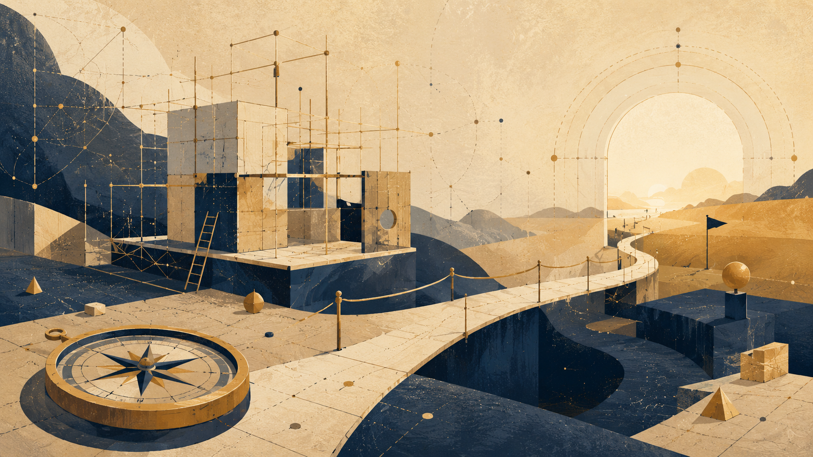

Sina Ná Patar, Lá Nyárë Tancaina Metta

Image description draft: carma sanwëo lá telyaina, tamma tiello ar tië pantaina ana aurë calima; i emma tana patar mauya-cáriëo, lúmava ar cestaina, lá nyárë tancaina metta.
Mapa mauya-cáriëo, lá lavë úvissë tancaina
Sina ná patar, lá nyárë tancaina metta. I sanwë-patar lá ná tana ve nolmë túcina, áyanë vinya, patar pahtaina hya hanquenta ya úquen polë cesta. Anta mapa ovantiéron: tië sanwien Potential, Ideal, Optimal, celu cuina, haiya, landa, cuilë-isto ar tengwë, ú quetila i mapa ná i anwië immo.
Mapa mára lá vista i tië. Lá lehta i lelyando cestallo yassë tarë. Anta er i ovantiër cenna: námië ar canta, naicë ar mauya-cárië, lérië ar valë, estel ar i caurë carien estel vanda lusta.
An sina i maquetta téra lá ná ná ma sina túcina ve theorem nótessëo?, mal tarë ma i carma ú yontala nórë, ú lavila naicelë, ú autala i quén, ar ú ahyala estel savië ú cenië? I túrë i pataro lá ná quetila immo metta, mal istala manen tana landarya.
Cendë sina panya i réna mauya-cáriëo i sanwë-pataro. Tana manen mauya cenda ilya ya tulë apa: lá ve savië ya mauya i cendando, lá ve tanwa sanar, lá ve nyárë metafísicava pahtaina, mal ve patar carmava ya mauya cesta, poita, landa ar entulya ana cuilë anwa.
1. Mana tyarë patar maura
Ú patar, cuilë rista. Ëa naicë, estel, merë, caurë, cilmë, landa, sanwë, hröa, enyalë ar firnië — mal lá anwa tië cenien i ovantiër imbetenta. Patar ontë i maura carien carma i ristanello ú autala i úvërya.
Mal patar ya ná tulca lá polë carë i cuilë immo vanya. Lambë ahya vanya lá, hyanatiër ahyar tancë lá, ar i quén ya ná quétina ahya er emma mi i carma. An sina patar ná maura, mal caurë. Lavë cenien, mal polë yando vista i ya mauya ná cenna.
I patar yantaina sís lá ná turien anwië, túrien quaestio, hya antien lehtalë manwa. Ná antien polië quetalë mauya-cáriëo tengwello mi lúmi yassen lá ëa tancassë metta. Cesta carë carma estelo ú carila estel vanda falsa.
Mi tengwë sina i patar tarë mi i tarna nihilism estel ó: lá auta úvissë antala vanda, mal lá lavë úvissë ahya úvë hehtien mauya-cárië.
2. Potential, Ideal ar Optimal ve lé cendien
Mi cendë sina Potential lá ná er i nat i sanwë-pataro; tana yando mana patar carë. Patar panta Potential handëo. Lavë ovantiër tulë cenna: naicë ar mauya-cárië, lérië ar valë, réna ar námië, celu cuina ar emma, emma ar tanwa, estel ar quetë pella i ya polë ná tanaina.
Mal Potential handëo lá ná anwië. Ná er i pantië i palaro. I anwië ya patar carë ovantë vinya cenna lá tana i ovantë túcina, ilúvë hya antaina ilya lúmessen. Sís i carma i pataro yesta: lá ilya námië cendien ná Ideal.
I Ideal i pataro lá ná ná alcarin, ilya harya hya metta. I Ideal ná astar: ana anwië, ana i quén, ana i nórë yassë quetë ná anwa, ar ana i celu cuina. Patar mauya-cáriëo ista quetë: sís istan; sís cendanyë; sís úsan emma; sís mauran celu pella; sís lá polin tyelë; sís quén polë ná harmaina qui quetan ú cauma.
I canta Optimal i sanwë-pataro lá ná patar ú rénar, mal patar ya ista yassë rénaryar nar ar lavë te ná poitainë. I Ideal ná anwië; i Potential ná lambë palya; i Optimal ná patar nómessë, lúmava ar cestaina ya carë lambë palya carmanna ú ahyala sa nyárenna metta.
3. Mana patar polë ar mana lá polë
Patar polë anta hyanatiër. Polë carë ovantiër carmanna, panta lambë, anta carma, tana rénar, ar tana yassë min cuilë samë exë ú ná er sa. Polë anta tië cenien, qui enyalë sa ná tië cenien ar lá haryalië i ya ná cenna.
Patar lá polë mapa túrë ya lá sen. Lá polë ahyala emma tanwanna, quetta nolmava netta metafísicava, naicelë parma manwa, quén emma maita, hya estel tancassë. Lá polë yanta i ambar turien immo ilya valenen.
Patar mauya-cáriëo lá vista nolmë, áyanë, carma vanya, astarmë, hröa hya cuilë-isto. Polë para telyallo, quetë ó telyallo ar tana ovantiër imbetenta, mal lá polë mapë túrë ya lá antaina sen. Írë yanta emma, mauya quetë emma ná. Írë yanta carma tengwiëo, mauya tana i réna carmava. Írë yanta quetta nolmava, mauya avá carë sa aura.
An sina i patar lá cesta airië pella cestië. I exë: cestië ná i lanta-sírerya. Ú cestië, lambë palya lomë ocomba ú tië et tenna ahya patar ya varya immo lá i ya cena immo.
4. I Neldë Cestali Mauya-cáriëo
I patar mauya tuvë neldë cestali.
I minya ná i cestië hyanatiéron. Varya ma i hyanatië imbe Potential, Ideal ar Optimal? Imbe celu ar emma? Imbe emma ar tanwa? Imbe estel ar vanda? Imbe naicë ar tengwë? Qui hyanatiër lantar, i patar ahya caurë tengwë yassen hlónë núra lá.
I attëa ná i cestië nórion. Nóre-sanwë lá ná sanar. Nyárë lá ná tyalië. Astarmë lá ná nótessë. Curwaina Handassë lá ná celu cuina. Emma lá ná tanwa. Nolmë lá ná netta. Cuilë-isto lá ná axan ilya. Patar mauya-cáriëo ista írë lelya nórëllo nórienna, ar tana i lelyalië.
I neldëa ná i cestië i quénwa. Varya ma i quén cuina? Avá ma lavë naicelë? Avá ma carë naicë parma manwa? Avá ma carë quén case? Avá ma carë astarmë nótienna? Avá ma yanta estel quildien caurë? Qui patar lanta i cestië quénwa, lá ná er lá tulca; lá ná valda.
I neldë cestali sin lá nar enyalier pella i sanwë-patar. Nar rantar sen. I sanwë-patar lá polë quetë Ideal qui lá ná manwa landa immo mi essë i Ideal.
Sina Ná Patar, Lá Nyárë Tancaina Metta — Ranta Atta
5. Emma, nolmë ar sanar pella hroa
Lúmessë i sanwë-patar yanta quettar ve energy, weight, field, medium, horizon, information, system, recursion ar boundary. Exi tulir nolmello, exi tengwiëllo, exi nóre-sanwëllo, exi lambello yára. An sina ilya lúmessë mauya maquetë: ná ma quetta nolmava? Ná ma emma carmava? Ná ma rinca? Ná ma er lambë carien carma?
Emma lá ná tanwa. Emma polë ná tanca, calima ar maita, mal lá polë mapë i túrë i tyalië, theorem nótessëo hya metië. Polë tana ovantë; lá tana i anwië yallo né mapaina.
Sanar lá ná coa tengwion nóre-sanwëo. Qui i sanwë-patar yanta sanar, mauya carë sa caumavë: lá “tana” tengwë, lá ahyala cosmology máriéva, lá ahyala quantum theory airiën, ar lá carila mornië-ciryar emma léra ilya nurtaina.
Írë i sanwë-patar quetë sanar pella hroa, mauya quetë sa. Anwië sina lá pusta túrerya; varya sa lá mapien túrë ya lá sen. Sanar mauya-cáriëo lá maura coat laboratoriava an ná hroa.
6. Patar ya polë hauta
Patar mauya-cáriëo ná patar ya polë hauta epë ahya quetë pella i ya polë ná tanaina.
Mauya polë quetë: sís emma ná; sís quetë valdo; sís tië sanwien; sís quetta nolmava ná yantaina, lá tanwa nolmava; sís celu vá; sís cestië amba mauya; sís i ovantë ná pitya; sís quén polë ná harmaina; sís estel yesta nurtë immo ve tancassë.
I polië hautien lá ná lusta i pataro. Ná ranta anwierya. Patar ya lá ista manen hauta yesta erya ilya, ar patar ya erya ilya pusta cesta. Ahya mapallo mahtanna ya anta lehtalë.
Patar ya lá polë hauta lá ná patar. Ná system ya cesta varya immo i anwiello. I canta Optimal i pataro lá ná pahtalië poita, mal i polië lemya pantaina ú liquien, ar tana réna ú hehtien i maquetta.
7. I celu cuina epë i patar
I patar lá tulë epë cuilë. Lá harya i quén. Lá polë carë quén cuina tanwa immo.
Írë quén, naicë, carma, astarmë hya cuilë-isto tulë mir i sanwë-patar, lá ná erma mapien sanwë maita. Ná celu cuina ya mauya varya túlienna. Emma polë calima i patar, mal lá mauya ná captaina sen.
Astarmë lá ná er nótië. Tulë celu cuinallo. Colë haiya, valë, hröa, enyalë ar aucassë. Patar ya mapë er “sanwë” astarmello ú varyala i celu auta márierya.
Patar mauya-cáriëo lá maquetë er mana polë para astarmello, mal yando mana lá mauya mapë sello. Sina ná ranta i lissë hehtaliëo: hehta i lusta yantien ilya nat an cenna téra lá.
8. Curwaina Handassë ar lambë ya hlónë tancaina lá
Curwaina Handassë ná cestië vinya i pataron an polë carë sanwë hlónë voronda lá i sanwë immo. Polë tecë tyelcavë, yonta sanwi, carë menelë hlarina, poita contradiction, carë style núra, anta emmar túrala, ar anta cenië i Quanta yassë en ëa lanta.
An sina Curwaina Handassë polë ná tamma cestien i patar, mal yando mahta poitalien quetë pella. Polë resta cestië consistency, hirë nórë yonta, compare versions, tana lambë túlalta, ar merë loicar. Mal qui ná yantaina ú carma, polë carë i patar caurë lá: moica lá, tancaina lá, ar mauya-cárië pitya lá.
I mahalma mauya-cáriëo Curwaina Handassëo lá ná carë i patar hlónë metta lá, mal tulya sen tana rénaryar calimavë lá. Mauya resta ve cilintë ar tamma cestaliëo, lá ve celu túriva ar lá ve vistando námo cuinao.
Mi tengwë sina, i yantië Curwaina Handassëo mauya ná metaina i cestië er ya i patar anta: carë ma i tamma mauya-cárië amba, hya er tancassë lambëo amba?
9. Patar lá ná úvë
Patar mára panta cestië. Patar raica erya ilya apa i lúmë.
Qui ilya metta polë ná yontaina i pataren, i patar vanya mauya-cárierya. Qui naicë tana sa ar ú naicë tana sa; qui túrë tana sa ar loica tana sa; qui nolmë, nyárë ar ghob ilya tanar sa — tá úma nat ná cestaina. I patar yesta matë i anwië lá omentë sa.
Patar ya lá ista mana polë quanta, pusta hya poita sa lá ná patar cuina, mal úvë carna patari. Cé hlónë núra, mal harya airië túlalta. Lá hehta nómë i ambarevë hanquenta.
An sina i patar mauya ista yassë polë lanta. Mauya lavë cestië, poitalë, landalië, ar lúmessë avá sa. I polië poitalien lá ná caurë i sanwë-pataren; ná tanwa i sanwë-patar lemya cuina.
10. Nihilism estel ó
I patar lá auta nihilism vanda ó. Avá sa ahya úvë hehtien mauya-cárië.
Lá quetë ilya nat vanda, ilya nat carna máriëo, naicë téra, i ambar carna máriéva epë, hya i Ideal nauva túra. Yando lá quetë lá ëa tengwë, lá tië, lá mauya-cárië, lá sanwë tyalien, ar lá estel.
Cesta colë nómë urda lá: lá ëa tancassë metta, mal ëa mauya-cárië. Lá ëa vanda, mal ëa Potential. Lá ëa lehtalë túcina, mal ëa tië valda. Lá ëa haryalië i anwië, mal ëa mauya lá quetë úanwa ana sa.
An sina ná patar ar lá nyárë metta. Estel lá ahya tancassë. Nihilism lá ahya úestel. I patar tarë imbetenta: lá tana i Ideal nauva túra, mal lá lavë i vá tanwa ahya lavë lusta.
11. Metta: tolo ar níra
Cendë sina an sina lá ná er yesta cauma. Panya i lúmi carmava ilya ya tulir apa. Qui i cendando anta i patar, lá mauya savë sa mal cesta sa. Qui ava sa, i avá polë yando ná maita qui tana yassë hyanatië ná lusta, yassë lelyalië ná tyelca lá, yassë emma mapë túrë, hya yassë quén cuina vanya mi lambë túlalta.
I patar varya attë astari er lúmessë: astar i tolova i sanwë-pataro ar astar i nírava cestiëo. Ú tolo, ëa er enyalier ristanë. Ú níra, ëa system ya polë anta immo airië túlalta.
I Ideal i cendë sina ná colë i attë túrer: estel ya lá ná úanwa, cestië ya lá ná úestel, ar patar ya lá harya i anwië mal harya mauya-cárië ten.
Carma celuron
Celur carmava ar cauma: cendë sina tulca i sanwë-patar immo ar i sanwi coirë — Potential, Ideal, Optimal, celu cuina, haiya, cestië ar lissë hehtaliëo. Lá tana i sanwë-patar ve nolmë túcina, áyanë vinya hya system pahtaina. I tyarmerya ná panta i lúmi cendien ar cestien i patar, ar varya úyontië imbe emma ar tanwa, estel ar tancassë, ar lambë carmava ar haryalië i anwië.
Science, Physics ar Mathematics ve Boundary Discipline
Mana ná claim, mana model, mana metaphor, ar mana lá mauya ahya proof

Image description draft: formulas, measurement ar models ve lambeli boundaryo, lá proof final.
Manen loë precision ú carila sa decoration
Science, physics ar mathematics tulir mir i theory lá antien aura authorityo, mal parmien discipline. Enyaltar ilya form responsible mauya ista yassë carë, yassë polë ná measured, yassë lanta, ar mana lá mauya claim pella i ya né shown. Ter i lens i theoryo, science lá ná i Ideal immo, ar mathematics lá ná substitute truth cuilëo. Nar lambeli boundaryo: ways precise hyanien possibility, form, test, validity ar limitation.
Scientific Potential ná i field possibilities ya en lá samë stable formulation: phenomenon en úexplained, relation en unmeasured, pattern ya repeats mal en lá understood, hya maquetta ya lá harya tool adequate. Scientific Ideal lá ná answer final, mal formulation responsible amba i ya polë ná known under conditions antainë, tested, falsified, repeated ar corrected. Scientific Optimal ná model local ya works under defined conditions ú quetila ná truth absolute. Good science an sina lá ná er power knowledgeo; yando ná form humilityo.
I lantië yesta írë precision ahya decoration. Apa formula, diagram, physical term hya mathematical concept tulë cenna, i cendando polë felë i philosophical claim yá né proven. Tana ná exactly i ya lá mauya martya sís. Formula mi theory sina polë ná relation map, structural image hya clarifying device, mal lá scientific formula unless harya units, measurement, domain of validity, testing conditions ar possibility failureo. Otherwise lá ná proof. Ná lambë.
Neldë levels an sina mauya lemya distinct. Metaphor loë concept illuminen similar structure. Model organizes relations mi tië yassë coherence polë ná examined. Scientific claim maura stronger conditions: definition, measurement, source, method, domain of validity ar ability failien. Yontië levels sin ná min i cauri hroa philosophical writingo ya borrows scientific language. Onë feeling deptho ú colila i haiya ya depth maura.
I caution map an sina ná simple:
Definition × domain of validity × distinction metaphor/model × source × possibility critiqueo ÷ borrowed authority × field-mixing × grand words × pretended proof.
Ilya use QFT, Higgs, Bell, Kochen-Specker, Bohmian mechanics, contextuality, locality hya non-locality mauya lelya ter mapa sina. Qui term lá carë real work, lá mauya appear. Qui appear, mauya lemya faithful rénaryan.
Mathematics parma i theory distinctions yar lá polë auta: possibility lá ná proof; proof lá ná computation; computation lá ná understanding; existence lá ná construction; verification lá ná decision; ar local solution lá ná closure i field ilya. P versus NP, Gödel, Turing, recursion ar computational hierarchies lá prove i theory. Restar sa quetien carefully systems, boundaries, verification, closure ar i nómë yassë lambë lá polë contain immo completely.
Physics parma humility hyana. Theory polë ná extremely precise mi domain er ar en partial. Model polë carë well, fail mi edge, ná extended, hya ahya limiting case lambë deeper. Sina lá ná weakness scienceo mal min túreryar: ista cuita ó domain validityo. Sello i theory para i Optimal anwa lá quetë ná Absolute Ideal. Quetë: sís carin; sís en lá istan.
Mi sense sina, boundary discipline ná form moral responsibilityo. Írë scientific language ná used ve decoration, exploits i work scientists ve rhetorical effect. Mapë i result distanceo, experiment, failure, repetition, criticism ar measurement — ar carë sa ornament. Mal írë used carefully, airita i living source yallo knowledge tullë: people, institutions, experiments, instruments, errors ar corrections.
Sina ná especially important mi theory Potentialo ar Idealo. Ná easy quetien ilya nat ná potential, ilya nat ná field, ilya nat ná information, hya ilya nat ná relation. Quettar sin ahyar dangerous írë autar distinctions. Potential lá ná excuse vagueness. Ideal lá ná exë essë ilya nat ya hlarë deep. Optimal lá ná formula ya vesta judgment. Ilya concept mauya colë carmarya inside boundary clear.
Cendë sina lá cesta carë i theory science, ar lá cesta prove sa ter physics hya mathematics. Maquetë nat amba modest ar amba urda: lambë ya lá naca authority exë nómello. Írë i theory loë science, mauya quetë ma quetë ve metaphor, model, structural comparison hya claim. Qui lá polë hyana, mauya lemya silent tenna polë.
I link ana i recursive edge ná clear: ilya precise answer panta boundary vinya. Ilya successful model tana yando mana lá contain. Ilya proof tarë inside system. Ilya measurement depends instrument, i nómë ar lúmë yassë tana ná cendaina, ar maquetta. Science, írë faithful immon, an sina lá ná cotumo hopeo ar lá substitute sen. Ná min i ways yainen human Potential lelya arin ana Ideal ú quetila yá tulnë.
Axani boundary disciplineo
- Anta domain of validity ilya termen.
- Hyana metaphor, model, structural comparison ar scientific claim.
- Avá esta formula hya diagram proof ú units, measurement, testing ar failure conditions.
- Avá loë scientific authority ve ornament.
- Enyalë i living source — people, experiments, instruments, errors ar corrections.
- Avá carë local model Absolute Ideal.
- Ilya accurate answer mauya quetë mana lá contain.
Closing sentence draft: Science lá anta crown i theoryn; anta boundary. Mathematics lá anta truth final; anta distinction. Physics lá anta absolute view; anta discipline cuilien faithfully mi domain.
The Imaginary, the Virtual, Gravity, and the Horizon — Part Three
Trust, frozen identity, repair ar the Whole
Event Horizons of Trust
Sís i metaphor can be expanded carefully, without turning sa into moral physics. Black hole lá used ve name absolute evilo, mal ve image boundaryo yassë real information can no longer reach i external frame referenceo. Moral event horizon ná i boundary yassë person, institution, idea hya community may still be able change, while i outside world can no longer receive tana change ve new information. Interpretive event horizon ná condition yassë i past becomes so heavy that every new sign is pulled back into i old meaning.
Ve conceptual map, lá scientific model:
Past too heavy → Interpretive gravity → Loss of trust → Blocked new information → Frozen identity
Black hole, mi sense sina, lá ná i person. Ná i relation formed imbe i person ar i possibility that i world will believe new information from them again. Person can do something truly terrible — lá misunderstanding, lá small mistake, mal injury ya creates new world around sa: rooms fall silent when they enter, words examined twice, gesture looks ve attempt purchase forgiveness. Later they may truly change inwardly, lá only apologize hya learn proper sentences. Yet when they help, help may be read ve strategy; when silent, silence ve evasion; when apologizing, apology ve another form i same pasto. Ëar pasts ya pull every new present toward themselves tenna sincere gesture reaches outside already distorted.
Mi relationship, betrayal destroys lá only one fact. Destroys i tië trusto yallo future facts nar meant auta. Before betrayal, sentence ve I am on my way can be simple. After sa, i same sentence carries whole room possibilitieso: perhaps true, half true, said calmien, hiding something. Even when i person speaks truth, truth no longer arrives alone. Arrives through memory i lieo.
Law yando knows gap sina, though cannot always solve sa. Person who finished serving sentence may be legally free, mal not interpretively free. Law can say debt was paid, case closed, courtroom door closed behind. Mal society lá functions like legal file. Remembers in its own way, fears in its own way, protects itself in its own way. Yá this is injustice. Yá justified caution. Yá both at once. Formal completion lá enough restore i capacity be read anew.
Mi economics, history broken obligationo creates gravity around every new obligation. Person, company hya country can recover: numbers improve, management changes, plan becomes more responsible. Mal after collapse, new promise lá sounds ve first promise. Sounds ve echo promise not kept. Credit ná trust mi future, mal broken past can bend even improved future.
Mi digital world, i event horizon lá only moral; yando algorithmic. Person changes mi time, mal archive returns them again ar again ana moment yassë i world learned identify them. Picture, screenshot, search result hya algorithmic recommendation can keep appearing as if present. Algorithm lá hates ar lá forgives; returns mana learned return. New information lá disappears, mal must pass ter system ya prefers i old sign.
Ëar event horizons imbe groups yando. Community can change, new generation speak different language, new leadership offer reconciliation, mal historical memory lá easily makes room. One gesture ná read ter old fear. Apology ter blood not dried. Promise ter promises broken. Yá suspicion is justified; yá imprisons future inside past; most often does both mi different measures. I metaphor must remain modest: lá decides man is right. Shows manen historical trust can tear tenna new information no longer passes easily.
I same is true institutionso, arto ar languageo. Institution can replace leadership, publish new procedures, appoint committee ar apologize; mal after deep loss trusto, reform sounds ve public relations, investigation ve cover-up, apology ve legal necessity. New work by person who harmed others may be genuinely beautiful, mal does not arrive clean; passes ter biography, injury ar question ma one may still listen. Language ya served concealment long enough loses lá only particular sentences; loses possibility that future sentence will sound ve truth.
Sina lá means i outside must accept i change. Yá refusal ná protection, ar yá damage was too real an trust return ter i same door. Repair ya lá ná redemption does not promise return ana i outside. Does not erase i event horizon formed. Only refuses let i past be all that exists inside. New Potential lá necessarily vanishes; simply does not always pass through i old form by which i world learned identify i person, institution, idea hya community.
God, the Whole, and Caution with the Name
Qui one wants use i name God, it must be used ó i same caution required of every name too large.
Lá God ve hand moving particles behind scenes. Lá ve mechanical operator miracleso. Lá ve figure standing outside i world ar repairing sa from outside.
Rather, God ve one possible name an i Whole: an i structure yassë Potential lá wasted, mal seeks most precise formerya through all layers appearanceo. Another name could be i Whole. Another source. Another i movement imbe Potential ar Ideal. I name matters less than i caution lá turn sa into idol.
Imaginary number lá ná i thought Godo. Virtual particle lá ná i action Godo. Gravity lá ná i will Godo limit freedom. Black hole lá ná punishment Godo. White hole lá ná body Godo.
Mal one may say carefully: mi i imaginary, reality discovers another direction yassë think. Mi i virtual, reality discovers way influence before appearing. Mi gravity, reality discovers freedom requires form. Mi horizon, reality discovers every form can become boundary. Mi i real, reality discovers mana of all sina managed pass into i world.
I examples must lá be identified ó i theory itself. Nar lá foundations, mal mirrors. I imaginary, virtual, gravity, black hole ar white hole lá prove Potential hya Ideal. Only show, each mi its own language, that reality lá made only of things already visible. Yando contains directions, pressures, boundaries ar horizons; ar ëar moments when precisely mana cannot be grasped directly determines i form of mana appears.
Perhaps i Ideal is i moment when all these layers no longer contradict one another: when hidden direction, unstable influence, weight, boundary ar visible sign align enough an something be lá only existent, mal justified mi its existence.
Lá justified from outside. Lá approved by observer. Lá proven once ar for all.
Justified mi i deeper sense: it does not betray i Potential yallo came.
Map of Frictions
I problem timeo asks manen describe change yá time itself is lá simple external parameter. I theory reads sina ve question about i birth i mediumo: lá only mana changes, mal manen i form yassë change becomes readable comes to be.
Fixed background versus dynamic background asks ma reality evolves on given stage hya ma i stage itself participates. I theory reads sina ve distinction imbe Potential appearing inside form ar form being born from Potential.
Superposition geometryo, singularity ar i black-hole information paradox all point toward i same difficulty: classical form cannot carry everything physical Potential demands of sa. No solution follows from sina, mal diagnosis does: sometimes i boundary is lá wall, mal i place yassë old readability breaks.
Locality versus entanglement ar i measurement problem ask ma information is content located mi place hya relation spread across places, systems ar readers. I theory carefully chooses i second language: information is readable relation, lá isolated content alone.
Continuity versus discreteness, vacuum energy ar i cosmological constant remind us of i limits this languageo. I theory may say i vacuum is lá empty ar spacetime may be emergent form, mal it does lá yet provide calculation ya replaces empirical physics.
In Relation to Existing Theories
String theory ar M-Theory seek unification through expanded structure particleso ar spaceo. Loop quantum gravity seeks quantization geometryo itself. Holography suggests boundary ar information may be more basic than volume. Emergent spacetime, causal sets ar CDT test mi different ways ma space ar time are lá primary. Interpretations quantum mechanicso — Many Worlds, pilot-wave, objective collapse, Copenhagen, consistent histories, relational QM ar QBism — offer different answers ana mana measurement ar state mean.
Between Potential and Ideal does lá compete ó them ve physical model. It offers layer readingo: to see them ve different attempts answer i same deep question — manen possibility, relation ar information become readable form without losing i Potential yallo arise.
What the Theory Offers and What It Does Not
I theory does offer:
- spacetime is lá necessarily i final ground;
- singularity is limit formo, lá necessarily object;
- information is lá simply erased yá loses readable form;
- relation may precede place;
- time ar causality may be readable forms deeper Potentialo;
- true unification is lá merely one equation an i forces, mal explanation manen Potential becomes space, time, matter, measurement ar force.
I theory does lá yet offer:
- quantum-gravity equation;
- full measurement mechanism;
- quantitative explanation vacuum energyo;
- identification dark mattero;
- complete physical explanation dark energyo;
- baryogenesis mechanism;
- decision imbe strings, loops, causal sets, CDT, holography ar emergent spacetime.
Conclusion
Qui chapter sina contributes anything, it is lá ter solving physics. Its contribution is shift i questiono. Instead asking only manen fit Potential into already existing spacetime, it asks manen spacetime, measurement, matter, force ar causality are born ve readable forms deeper Potentialo.
Sina is change layero: lá new physics instead physics, mal more careful way think about mana physics seeks yá seeks unification.